Chapter 5 Differentiation and Integration
5.1 Differentiation
5.1.1 Derivative and tangent lines
5.1.1.1 Geometric meaning of the derivative
- The steepness of a line can be determined by its slope.
- The steepness of the graph of a function (\(f\)) at a given point on it (say \((x_0, f{(x_0)})\)), can be approximated by its tangent line at that point.
- The slope of the tangent line at a point on the function is equal to the derivative of the function at that point
- The derivative of \(f\) at \(x_0\) is denoted by \(f^\prime (x_0)\)
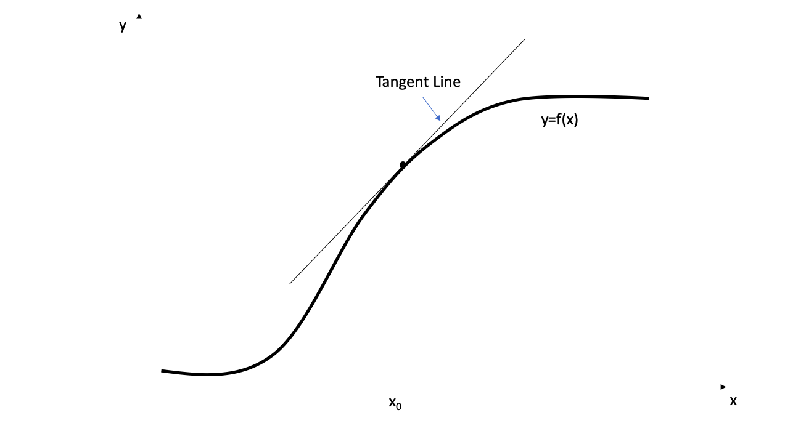
- The direct computation of the slope of the tangent line is not possible as we are given only one point \((x_0, f{(x_0)})\).
- Instead, we consider the secant line through two points: \((x_0, f{(x_0)})\) and \((x, f{(x)})\), on the graph of \(f\).
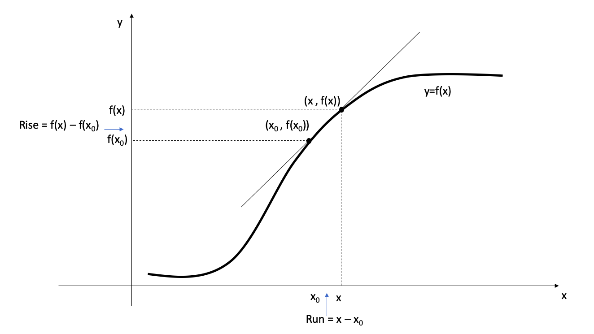
- As \(x\) approaches \(x_0\), the secant line is approaching to the tangent line.
- As \(x\) varies, the secant line turns about the fixed point \((x_0, f{(x_0)})\).
- We can describe the tangent line as the limiting line of the secant line when \(x\) approaches \(x_0\) from either direction.
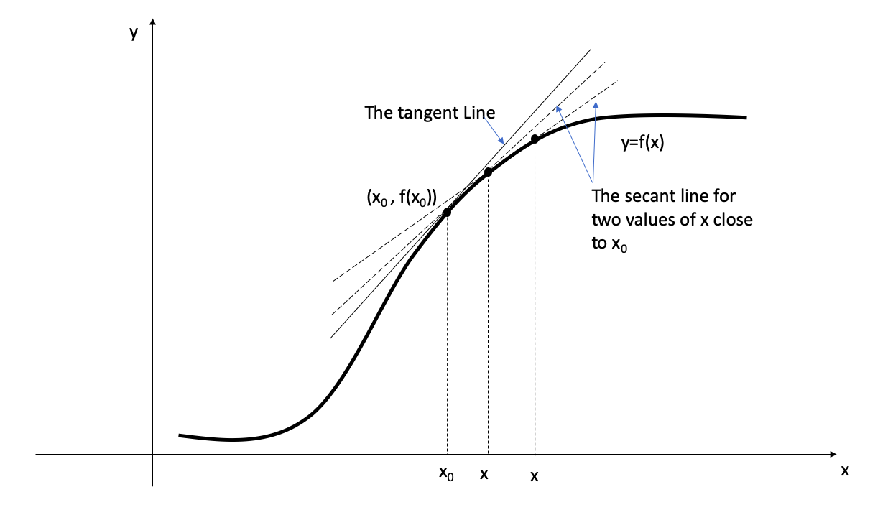
- As we move on the secant line from \((x_0, f{(x_0)})\) to \((x, f{(x)})\)
- the rise is \(f(x) - f(x_0)\)
- the run is \(x - x_0\).
- Therefore, \[\text{The slope of the secant line} = \frac{f(x) - f(x_0)}{x - x_0} \text{ for } x\neq x_0.\]
- To have the derivative be the slope of the tangent line, we define it as the limit of the slope of the secant line.
Definition 1: Tangent line
The tangent line to the curve \(f\) at the point \((x_0, f(x_0))\) is the line through that point with slope \[m = lim_{x\to x_{0}}\frac{f(x)-f(x_0)}{x-x_0}\]
provided that this limit exists
Definition 2
The derivative of a function \(f\) at \(x_0\) is \[f^{\prime}(x_0) = lim_{x\to x_{0}}\frac{f(x) - f(x_0)}{x-x_0}\] provided this limit exists and is finite.
- If this limit does not exist or if it is infinite, we say that \(f\) does not have a derivative at \(x_{0}\)
Example 1 Compute the derivative of the function \(x^2\) at \(x=1\), using the definition of derivative

The geometric interpretation of the above solution
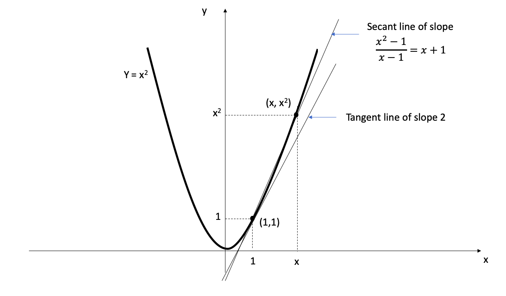
- The derivative is the slope of the tangent line to the graph at the point \((1,1)\). ( \(f^\prime(1) = 2\))
- The secant line has slope \(x+1\), and the limit of that slope as x tends to 1 is the slope 2 of the tangent line
5.1.1.2 Equations of the tangent lines
- When we compute the derivative, \(f^\prime(x_0)\), we can give an equation for the tangent line at \((x_0, f(x_0))\) on the graph of \(f\).
- The tangent line has the equation \[y-f(x_0)= f^\prime(x_0)(x-x_0)\]
Example 2
Give the equation for the tangent line to the parabola \(y=x^2\) at \(x=1\).

5.1.1.3 Important properties
1. Differentiable functions are continuous
- A function must be continuous at any point where it has a derivative.
Theorem
If the derivative \(f^\prime(x_0)\) exists, then the function \(f\) is continuous at \(x_{0}\).
2. Continuous functions that do not have derivative
The converse of the above theorem is false; that is, there are functions that are continuous but not differentiable.
This usually occurs in one of the two ways:
- When the graph of \(f\) has a vertical tangent line at a given point. (The slope of the secant line \(\frac{f(x) - f(x_0)}{x-x_0}\) tends to \(\infty\) or to \(-\infty\) as \(x\) tends to \(x_0\))
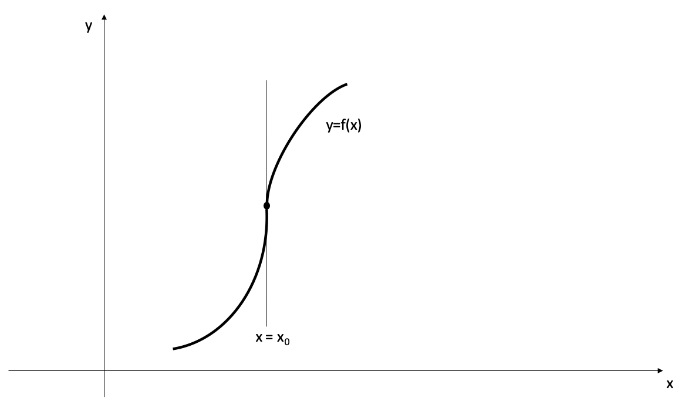
- When the secant line has different limits as \(x\) tends to \(x_0\) from the left and from the right (i.e. when the graph has a sharp corner or a cusp at \(x=x_0\)).
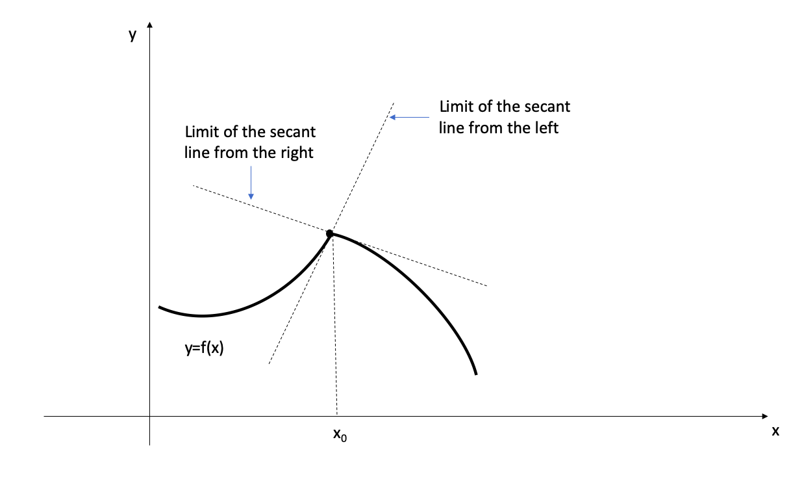
The graph of a function will not have a tangent line at a point where the function is discontinuous.
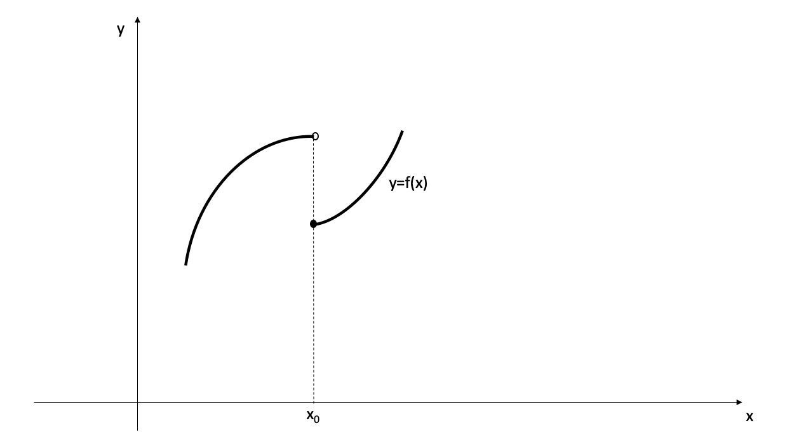
- This graph does not have a tangent line at \(x=x_{0}\)
- Therefore, the function \(f\) does not have a derivative at \(x_{0}\).
5.1.2 Leibniz notation and derivative as a function
Figure 5.1: Isaac Newton and Gottfried Leibniz
5.1.2 Leibniz notation and derivative as a function
In the Leibniz notation the derivative of \(f\) at \(x_0\) is denoted by the symbol \(\frac{df}{dx}(x_0)\)
With Leibniz notation the definition of the derivative reads
\[\frac{df}{dx}(x_0)= lim_{x\to x_{0}}\frac{f(x)-f(x_0)}{x-x_0}\]
We set \(\Delta x = x-x_0.\)
Then \(x = x_0+ \Delta x\).
Let \(\Delta f\) for the change \(f(x_0 + \Delta x) - f(x_0)\) in the value of \(f\) that occurs when we change \(x\) by \(\Delta x\) from \(x_0\) to \(x_0+\Delta x\)
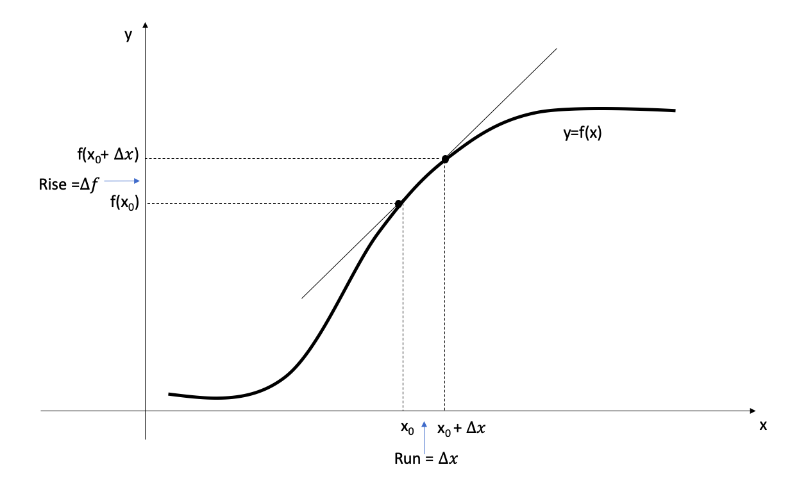
Then the slope of the secant line takes the form
\[\frac{f(x_0 +\Delta x)-f(x_0)}{\Delta x }= \frac{\Delta f}{\Delta x}.\]
Now the definition of the derivative reads
\[\frac{df}{dx} (x_0) = lim_{\Delta x\to 0}\frac{\Delta f}{\Delta x}= lim_{\Delta x\to 0} \frac{f(x_0 +\Delta x)-f(x_0)}{\Delta x }\]
Example 3
Use the above definition of the derivative to compute \(\frac{df}{dx}(3)\) where \(f(x)=x^2\)

5.1.2.1 The derivative as a function
So far we considered derivatives at a given value of x
If we consider the derivative at a variable \(x\), we get the derivative function \(\frac{df}{dx}\) whose value \(\frac{df}{dx}(x)\) is the slope of the tangent line to the graph of f at the point \((x, f(x)).\)
\[\frac{df}{dx}(x) =lim_{\Delta x\to 0}\frac{f(x+\Delta x) -f(x)}{\Delta x}\]
5.1.3 Derivatives of polynomials and exponential functions
5.1.3.1 Derivative of a constant function
\[\frac{d}{dx}(c) = 0\]

5.1.3.2 Power functions
- We now look at the functions \(f(x) = x^n\).
Pascal’s Triangle and the Binomial Theorem
Binomial Expansions Using Pascal’s Triangle
Consider the following expanded powers of \((a + b)^n\), where \(a + b\) is any binomial and \(n\) is a whole number. Look for patterns.
\((a+b)^0 = 1\)
\((a+b)^1 = a+b\)
\((a+b)^2 = a^2+2ab+b^2\)
\((a+b)^3 = a^3+3a^2b+3ab^2+b^3\)
\((a+b)^4 = a^4+4a^3b+6a^2b^2+4ab^3+b^4\)
\((a+b)^5 = a^5+5a^4b+10a^3b^2+10a^2b^3+5ab^4+b^5\)
Each expansion is a polynomial.
- Blaise Pascal found a numerical pattern, called Pascal’s Triangle
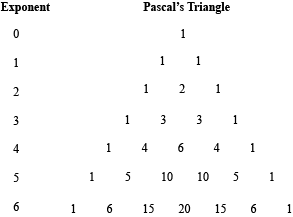
- Pascal’s Triangle gives us the coefficients for an expanded binomial of the form \((a + b)^n\), where \(n\) is the row of the triangle.
Binomial Theorem
- According to the Binomial Theorem, if \(a\) and \(b\) are any real numbers and \(k\) is a positive integer, then
\[(a+b)^n = a^n + na^{n-1}b+\frac{n(n-1)}{2!}a^{n-2}b^2+ \frac{n(n-1)(n-2)}{3!}a^{n-3}b^3 +\]
\[\dots + \frac{n(n-1)(n-2)\dots (n-k+1)}{n!}a^{n-k}b^k + \dots + nab^{n-1}+b^n\]
The traditional notation for the binomial coefficients is \[{n \choose 0}=1\]
\[{n \choose k}=\frac{n(n-1)(n-2)\dots (n-k+1)}{k!}\] \(n=1,2,\dots, k\)
which enables us to write the Binomial Theorem in the abbreviated form
\[(a+b)^n = \sum_{k=0}^n {n \choose k }a^{n-k}b^k = \sum_{k=0}^n {n \choose k }a^{k}b^{n-k}.\]
Example 1
\(f(x)=x\)

Example 2
\(f(x)=x^2\)

Example 3
\(f(x)=x^3\)

Example 4
\(f(x)=x^4\)

The Power Rule
If \(n\) is a positive integer, then
\[\frac{d}{dx}(x^n)=nx^{n-1}\]

Functions with negative integer exponents
Example 5
\(f(x)=\frac{1}{x}\)

When the exponent is a fraction
Example 6
\(f(x)=\sqrt{x}\)

The Power Rule (General version)
If \(n\) is any real number, then
\[\frac{d}{dx}(x^n)=nx^{n-1}\]
5.1.3.3 The constant multiple rule
If \(c\) is a constant and \(f\) is a differentiable function, then
\[\frac{d}{dx}[cf(x)]= c\frac{d}{dx}f(x)\]

Example 7
\(f(x)=3x^4\)

5.1.3.4 The Sum Rule
If \(f\) and \(g\) are both differentiable, then
\[\frac{d}{dx}[f(x)+g(x)]= \frac{d}{dx}f(x)+ \frac{d}{dx}g(x)\]

- The Sum Rule is applicable to the sum of any number of functions
5.1.3.5 The Difference Rule
If \(f\) and \(g\) are both differentiable, then
\[\frac{d}{dx}[f(x)-g(x)]= \frac{d}{dx}f(x)- \frac{d}{dx}g(x)\]
- The Constant Multiple Rule, the Sum Rule and the Difference Rule can be combined with the Power Rule to differentiate any polynomial.
Example 8
Differentiate \(f(x)=x^4 - 6x^2+4\)
Find the points on the curve \(f(x)=x^4-6x^2+4\) where the tangent line is horizontal
5.1.3.6 Exponential Functions
Exercise:
Compute the derivative of the exponential function \(f(x) = a^x\) using th definition of a derivative

Definition: Definition of the number \(e\)
\(e\) is the number such that
\[lim_{h\to 0}\frac{e^h -1}{h}=1\]
If we put \(a=e\) and , then, \(f^\prime(0)=1\).
Then derivative of the Natural Exponential Function \[\frac{d}{dx}(e^x)= e^x\]
Therefore, the exponential function, \(f(x) = e^x\) has the property that it is its own derivative.
Geometrically, this means that the slope of the tangent line to the curve \(f(x) = e^x\) is equal to the y-coordinate of the point.
Example 9
If \(f(x)=e^x-x\), find \(f^\prime(x)\)
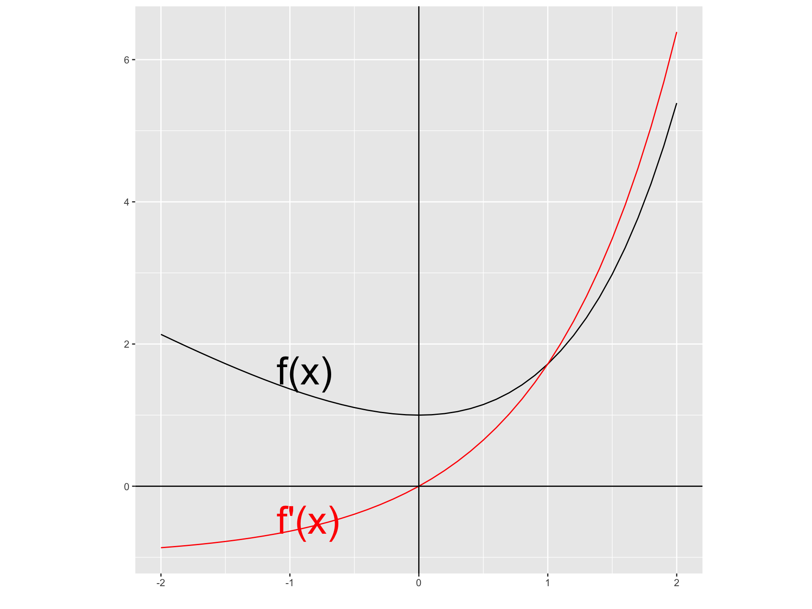
5.1.4 The product and quotient rules
5.1.4.1 The product rule
If \(f\)and \(g\) are both differentiable, then
\[\frac{d}{dx}[f(x)g(x)]= f(x)\frac{d}{dx}[g(x)]+ g(x)\frac{d}{dx}[f(x)]\]

Example 10
If \(f(x)=xe^x\), find \(f^\prime(x)\)

5.1.4.2 The quotient rule
If \(f\)and \(g\) are both differentiable, then
\[\frac{d}{dx}[\frac{f(x)}{g(x)}]= \frac{g(x)\frac{d}{dx}[f(x)]- f(x)\frac{d}{dx}[g(x)]}{[g(x)]^2}\]

Example 11
If \(f(x)=\frac{x^2+x-2}{x^3+6}\), find \(f^\prime(x)\)

5.1.5 The chain rule
If \(y=f(u)\) and \(u=g(x)\) are both differentiable functions, then
\[\frac{dy}{dx} = \frac{dy}{du}\frac{du}{dx} \]

Example 12
If \(f(x)=\sqrt{x^2+1}\), find \(f^\prime(x)\) using chain rule.

5.1.5.1 The power rule combined with the chain rule
If \(n\) is any real number and \(u=g(x)\) is differentiable, then
\[\frac{d}{dx}(u^n)= nu^{n-1}\frac{du}{dx}\]
Alternatively,
\[\frac{d}{dx}([g(x)]^n)= n[g(x)]^{n-1}\frac{d}{dx}g(x)\]

Example 13
If \(f(x)=(x^3-2)^{100}\), find \(f^\prime(x)\)

Example 14
If \(f(x)=\frac{1}{(x^2+x+1)^{1/3}}\), find \(f^\prime(x)\)

5.1.6 Partial Derivatives
If \(f\) is a function of two variables, its partial derivatives are the functions \(f_x\) and \(f_y\) defined by
\[f_x=f_x(x,y)=lim_{h\to 0}\frac{f(x+h,y)-f(x,y)}{h}\]
\[f_y=f_y(x,y)=lim_{h\to 0}\frac{f(x,y+h)-f(x,y)}{h}\]
There are many alternative notations for partial derivatives.
Instead of \(f_x\), it can be written as \(f_1\) or \(D_1f\) to indicate that the differentiation is with respect to the first variable.
Another notation is \(\frac{\partial f}{\partial x}\).
But here \(\frac{\partial f}{\partial x}\) can’t be interpreted as a ratio of differentials.
Notations for Partial Derivatives
If \(z=f(x,y),\) we write
\[f_x=f_x(x,y)= \frac{\partial f}{\partial x}= \frac{\partial }{\partial x}f(x,y)= \frac{\partial z }{\partial x}= f_1=D_1f= D_xf \]
\[f_y=f_y(x,y)= \frac{\partial f}{\partial y}= \frac{\partial }{\partial y}f(x,y)= \frac{\partial z }{\partial y}= f_2=D_2f= D_yf \]
The partial derivative with respect to \(x\) is just the ordinary derivative of the function of a single variable that we get by keeping \(y\) fixed.
Therefore, we have the following rule.
Rule for finding Partial Derivatives of \(z=f(x,y)\)
To find \(f_x\), regard \(y\) as a constant and differentiate \(f(x,y)\) with respect to \(x\).
To find \(f_y\), regard \(x\) as a constant and differentiate \(f(x,y)\) with respect to \(y\).
Example 15
If \(f(x,y)=x^3+x^2y^3-2y^2\), find \(f_x(2,1)\) and \(f_y(2,1)\)

5.1.7 Higher Derivatives
If \(f\) is a differentiable function, then its derivative \(f^\prime\) is also a function.
It is denoted by \((f^\prime)^\prime = f^{\prime\prime}\).
This \(f^{\prime\prime}\) is called the second derivative of \(f\) as it is the derivative of the derivative of \(f\).
Using Leibniz notation we can write the second derivative of \(f\) as follows:
\[\frac{d}{dx}(\frac{dy}{dx})= \frac{d^2y}{dx^2}\]
Another notation is \(f^{\prime\prime}= D^2f(x)\).
We can interpret \(f^{\prime\prime}\) as the slope of the curve \(y=f^{\prime}(x)\) at the point \((x, f^\prime(x))\).
In other words, it is the rate of change of the slope of the original curve \(f(x)\).
The third derivative \(f^{\prime\prime\prime}\) is the derivative of the second derivative: \(f^{\prime\prime\prime} = (f^{\prime\prime})^\prime\).
Therefore, \(f^{\prime\prime\prime}(x)\) can be interpreted as the slope of the curve \(y= f^{\prime\prime}(x)\) or as the rate of change of \(f^{\prime\prime}(x)\)
Alternative notations for the third derivative:
\[y^{\prime\prime\prime} = f^{\prime\prime\prime}(x)=\frac{d}{dx}(\frac{d^2y}{dx^2})= \frac{d^3y}{dx^3}= D^3f(x)\]
In general, the \(n\)th derivative of \(f\) is denoted by \(f^{(n)}\) and is obtained from \(f\) by differentiating \(n\) times.
If \(y=f(x)\), \[y^{(n)} = f^{(n)}(x)= \frac{d^ny}{dx^n}= D^nf(x)\]
Example 16
If \(f(x)=x^3-7x^2-3x+5\)

5.1.8 Derivatives of logarithmic functions
\[\frac{d}{dx}(a^x)= a^xln(a)\]
\[\frac{d}{dx}(log_ax)= \frac{1}{xln(a)}\]

\[\frac{d}{dx}(lnx)= \frac{1}{x}\]
Example 17
If \(y=ln(x^3+1)\)

In general, if we combine derivatives of logarithmic functions with the chain rule. we get
\[\frac{d}{dx}{ln\text{ } u} = \frac{1}{u}\frac{du}{dx}\] or
\[\frac{d}{dx}{[ln\text{ } g(x)]} = \frac{g^\prime (x)}{g(x)}\]
5.1.9 Applications of differentiation
5.1.9.1 Maximum and minimum values
1. Definition
A function \(f\) has an absolute maximum (or global maximum) at \(c\) if \(f(c)\geq f(x)\) for all \(x\) in \(D\), where \(D\) is the domain of \(f\). The number \(f(c)\) is called the maximum value of \(f\) on \(D\).
Similarly, \(f\) has an absolute minimum (or global minimum) at \(c\) if \(f(c)\leq f(x)\) for all \(x\) in \(D\) and the number \(f(c)\) is called the minimum value of \(f\) on \(D\).
The maximum and minimum values of \(f\) are called the extreme values of \(f\).
2. Definition
A function \(f\) has an local maximum (or relative maximum) at \(c\) if \(f(c)\geq f(x)\) when \(x\) is near \(c\). [This means that \(f(c)\geq f(x)\) for all \(x\) in some open interval containing \(c\)]
Similarly, \(f\) has a local minimum (or relative minimum) at \(c\) if \(f(c)\leq f(x)\) when \(x\) is near \(c\).
Figure 5.2: Isaac Newton and Gottfried Leibniz
3. The Extreme Value Theorem
If \(f\) is continuous on a closed interval \([a,b]\), then \(f\) attains an absolute maximum value \(f(c)\) and an absolute minimum value \(f(d)\) at some numbers \(c\) and \(d\) in \([a,b]\)

- A function need not possess extreme values if either hypothesis (continuity or closed interval) is omitted from the Extreme Value Theorem

4. Fermat’s Theorem
If \(f\) has a local maximum or minimum at \(c\), and if \(f^\prime(c)\) exists, then \(f^\prime(c) = 0.\)

Examples
5. Definition
A critical number of a function \(f\) is a number \(c\) in the domain of \(f\) such that either \(f^\prime(c) = 0\) or \(f^\prime(c)\) does not exist.
Example 18
Find the critical numbers of \(f(x)=x^{3/5}(4-x).\)

- In terms of critical numbers, Fermat’s Theorem can be rephrased as,
6. Fermat’s Theorem (modification)
If \(f\) has a local maximum or minimum at \(c\), then \(c\) is a critical number of \(f\).
7. The closed interval method
To find the absolute maximum and minimum values of a continuous function \(f\) on a closed interval \([a,b]\):
Find the values of \(f\) at the critical numbers of \(f\) in \((a,b)\).
Find the values of \(f\) at the endpoints of the interval.
The largest of the values from Steps 1 and 2 is the absolute maximum value; the smallest of these values is the absolute minimum value.
Example 19
Find the absolute maximum and minimum values of the function \(f(x)=x^3-3x^2+1\) \(-\frac{1}{2} \leq x \leq4.\)

5.1.9.2 How derivatives affect the shape of a graph
5.1.9.2.1 What does \(f^\prime\) say about \(f\)?
- Increasing/ Decreasing Test
- If \(f^\prime (x) >0\) on an interval, then \(f\) is increasing on that interval
- If \(f^\prime (x) <0\) on an interval, then \(f\) is decreasing on that interval
Example 20
Find where the function \(f(x)=3x^4-4x^3- 12x^2+5\) is increasing and where it is decreasing

- The First Derivative Test
Suppose that \(c\) is a critical number of a continuous function \(f\).
If \(f^\prime\) changes from positive to negative at \(c\), then \(f\) has a local maximum at \(c\).
If \(f^\prime\) changes from negative to positive at \(c\), then \(f\) has a local minimum at \(c\).
If \(f^\prime\) does not change sign at \(c\) (for example, if \(f^\prime\) is positive on both sides of \(c\) or negative on both sides), then \(f\) has no local maximum or minimum at \(c\).

5.1.9.2.2 What does \(f^{\prime \prime}\) say about \(f\)?
Concavity
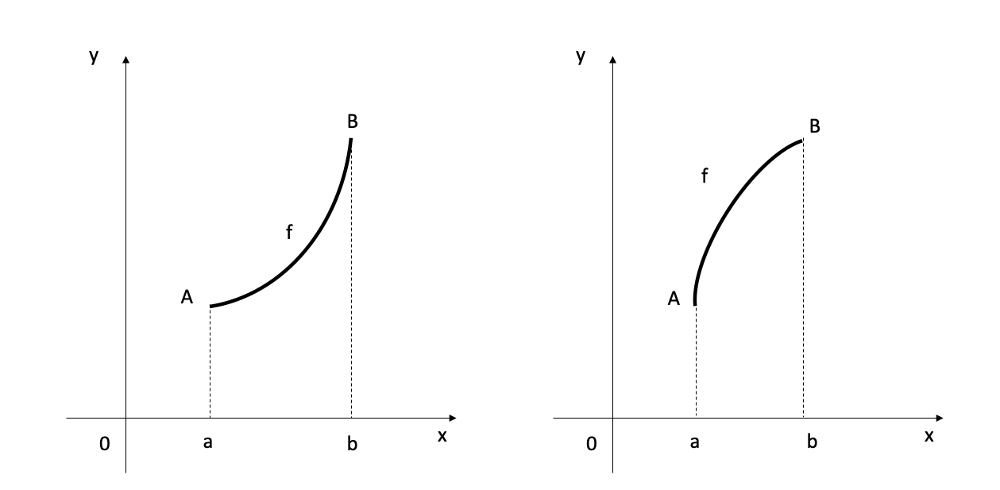
- Definition
If the graph of \(f\) lies above all of its tangents on an interval \(I\), then it is called concave upward on \(I\). If the graph of \(f\) lies below all of its tangents on \(I\), it is called concave downward on \(I\).
- Concavity Test
If \(f^{\prime \prime}(x)>0\) for all \(x\) in \(I\), then the graph of \(f\) is concave upward on \(I\).
If \(f^{\prime \prime}(x)<0\) for all \(x\) in \(I\), then the graph of \(f\) is concave downward on \(I\).
- Definition: Inflection Point
A point \(P\) in a curve \(y=f(x)\) is called an inflection point if \(f\) is continuous there and the curve changes from concave upward to concave downward or from concave downward to concave upward at \(P\).
- The Second Derivative Test
Suppose \(f^{\prime \prime}\) is continuous near \(c\). (a) If \(f^\prime (c) = 0\) and \(f^{\prime \prime}(c) >0,\) then \(f\) has a local minimum at \(c\) (b) If \(f^\prime (c) = 0\) and \(f^{\prime \prime}(c) <0,\) then \(f\) has a local maximum at \(c\)
Example 21
Discuss the curve \(y= x^4 - 4x^3\) with respect to concavity, points of inflection and local maxima and minima.
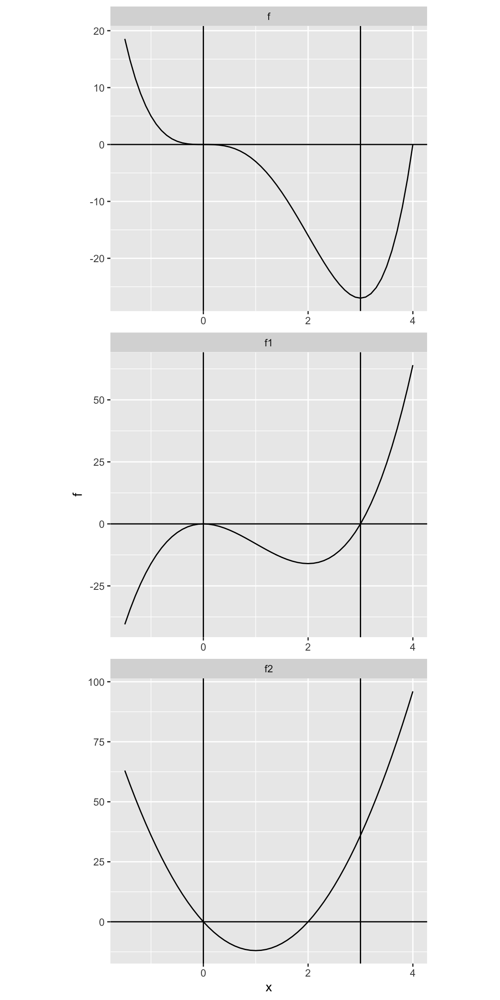
5.2 Integration
5.2.1 The Definite Integral
Definition: Definite Integral
If \(f\) is a continuous function defined for \(a \leq x \leq b\), we divide the interval \([a,b]\) into \(n\) sub-intervals of equal width \(\Delta x = (b-a)/n\). We let \(x_0 (=a) , x_1, x_2, \dots, x_n(=b)\) be the endpoints of these sub-intervals and we let \(x_1^*,x_2^*, \dots, x_n^*\) be any sample point in these sub-intervals, so \(x_i^*\) lies in the \(i\)th sub-interval \([x_{i-1} , x_i]\). Then definite integral of \(f\) from \(a\) to \(b\) is
\[\int_a^b f(x) dx = lim_{n\to \infty}\sum_{i=1}^n f(x_i^*) \Delta x \]

5.2.2 The Area Problem
5.2.3 The geometric definition of the integral
5.2.4 The Fundamental Theorem of Calculus
5.2.5 Indefinite integrals and integrals of
\(x^n\) (\(n\neq-1\), \(sin x\), \(cos x\))
5.2.6 The algebra of integrals
5.2.7 integration and substitution
5.2.8 the analytic definition of the integral
Reading :
Stewart, J. (2003). Calculus: Early Transcendentals. Thomson Learning. Inc., Belmont, CA.
Shenk, A. (1988). Calculus and analytic geometry. Scott Foresman & Company.
5.3 Tutorial
Chapter 5.1: Differentiation
- The graph of function \(f\) is given. Use it to sketch the graph of the derivative \(f^\prime\)
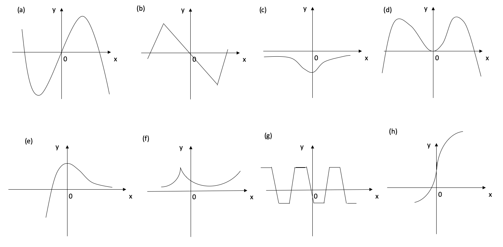
- Find the derivative of the function using the definition of derivative. state the domain of the function and the domain of the derivative.
- \(f(x) = 20\)
- \(f(x) = 1-3x^2\)
- \(f(x) = x^3 -3x+5\)
- \(f(x) = \sqrt{1+2x}\)
- \(f(x) = 12+5x\)
- \(g(x) = 5x^2+3x-2\)
- \(g(x) = x+\sqrt{x}\)
- \(g(x) = \frac{3+x}{1-3x}\)
- \(G(t) = \frac{4t}{t+1}\)
- \(g(x) = \frac{1}{x^2}\)
- \(G(t) = t^4\)
- The graph of \(f\) is given.
- At what values is \(f\) discontinuous? Why?
- At what values is \(f\) not differentiable? Why?
Figure 5.3: (a)
Figure 5.4: (b)
Where is the function \(f(x) = |x|\) differentiable? find a formula for \(f^\prime\) and sketch its graph.
Find an equation of the tangent line to the curve \(y=x \sqrt x\) at the point \((1,1).\) Illustrate by graphing the curve and its tangent line.
If \(f(x) = e^x -x,\) find \(f^\prime\). Compare the graphs of \(f\) and \(f^\prime\).
At what point on the curve \(y=e^x\) is the tangent line parallel to the line \(y=2x\)?
Differentiate the function
- \(g(x) = \frac{3x-1}{2x+1}\)
- \(V(x) = (2x^3+3)(x^4-2x)\)
- \(f(y) = \left ( \frac{1}{y^2}- \frac{3}{y^4} \right ) (y+5y^3)\)
- \(f(x) = \frac{1}{x^4+x^2+1}\)
- \(f(x) = \frac{x}{x+\frac{c}{x}}\)
- \(f(x) = \frac{3x^2+2\sqrt x}{x}\)
- Find an equation of the tangent line to the given curve at the specified point.
- \(y= \frac{1}{1+x^2}\), \((-1, \frac{1}{2})\)
- \(y= \frac{e^x }{1+x^2}\), \((1, \frac{e}{2})\)
- Suppose that \(f(5) = 1\) , \(f^\prime (5) =6\), \(g(5) = -3\) and \(g^\prime (5) =2\). Find the following values.
- \((fg)^\prime(5)\)
- \((f/g)^\prime(5)\)
- \((g/f)^\prime(5)\)
- If \(h(2) = 4\) and \(h^\prime(2) = -3,\) find
\[\frac{d}{dx} \left( \frac{h(x)}{x} \right) \Bigr|_{x=2} \]
Use the Product Rule twice to prove that if \(f\), \(g\) and \(h\) are differentiable, then \[(fgh)^\prime = f^\prime gh+ fg^\prime h + fgh^\prime\]
Taking \(f=g=h\) in part (a), show that
\[\frac{d}{dx} [f(x)]^3= 3[f(x)]^2f^\prime(x)\]
- Use part (b) to differentiate \(y= e^{3x}\)
- Write the composite function in the form \(f(g(x)).\) Then find the derivative of the function.
- \(f(x) = \sqrt{x^2+1}\)
- \(f(x) = (x^3-1)^{100}\)
- \(f(x) = e^{-mx}\)
- \(g(t) =\frac{1}{(t^4+1)^3}\)
- \(f(x) = (1+4x)^5(3+x-x^2)^8\)
- \(f(t) = \left( \frac{t-2}{2t+1} \right)^9\)
Suppose that \(F(x) = f(g(x))\) and \(g(3) =6\), \(g^\prime(3) =4\), \(f^\prime(3) =2\) and \(f^\prime(6) =7\). Find \(F^\prime(3).\)
A table of values for \(f,g, f^\prime,\) and \(g^\prime\) is given.
| \(x\) | \(f(x)\) | \(g(x)\) | \(f^\prime(x)\) | \(g^\prime(x)\) |
|---|---|---|---|---|
| 1 | 3 | 2 | 4 | 6 |
| 2 | 1 | 8 | 5 | 7 |
| 3 | 7 | 2 | 7 | 9 |
- If \(h(x) = f(g(x))\), Find \(h^\prime (1)\). \(\text { }\) (b) If \(H(x) = g(f(x))\), Find \(H^\prime (1)\).
- Suppose \(L\) is a function such that \(L^{\prime}(x)=1/x\) for \(x>0\). Find an expression for the derivative of each function.
- \(f(x)= L(x^4)\)
- \(g(x)= L(4x)\)
- \(F(x)= [L(x)]^4\)
- \(G(x) = L(1/x)\)
- Find the fist and second derivatives of the function
- \(f(x)= x^5+6x^2-7x\)
- \(F(t)=t^8-7t^6+2t^4\)
- \(F(t)= (1-7t)^6\)
- Show that \(\frac{d}{dx} [ln \text{ }g(x)]= \frac{g^\prime (x)}{g(x)}\) \(\text{ }\) (b) Differentiate \(y=ln (x^3+1)\)
Find \(\frac{d}{dx} ln \left[ \frac{x+1}{\sqrt{x-2}}\right]\)
Sketch the graph of the function \(f(x) = x^{\frac{2}{3}}(6-x)^{\frac{1}{3}}.\)